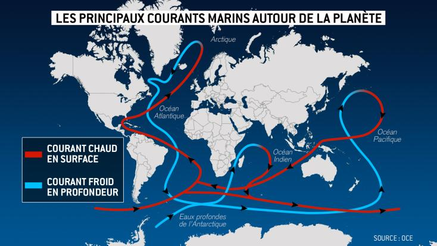

×
Les courants marins, les cœur de Poséidon

Le cœur, avec son rythme constant et ses palpitations, est le moteur de la vie, tout comme les courants marins sont les veines de l'océan, transportant chaleur, nutriments et vie à travers le globe. Il y a une symétrie magnifique dans le fait que nos cœurs battent au rythme de ces courants invisibles.